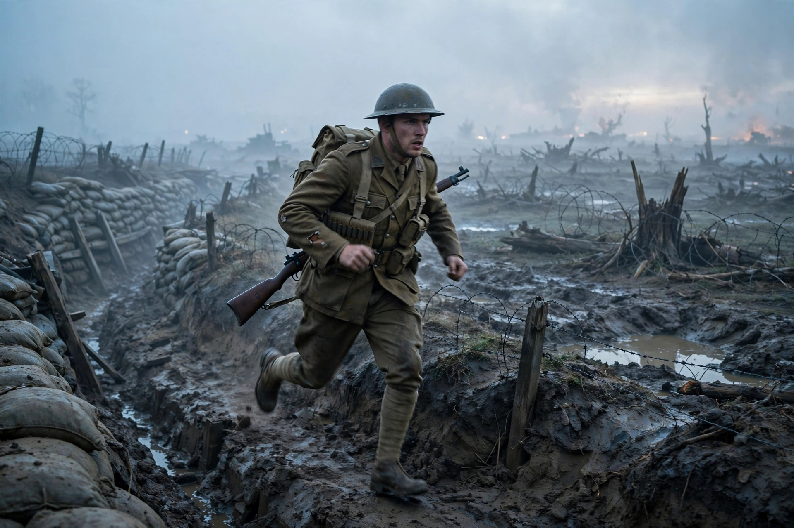

| 1917 | |
|---|---|
 | |
| Directed by | Sam Mendes |
| Starring | George MacKay, Dean-Charles Chapman |
| Cinematography | Roger Deakins |
| Release | December 2019 |
| Box office | ~US$384 million |
1917 is a 2019 British war film directed and produced by Sam Mendes, who co-wrote it with Krysty Wilson-Cairns. The film stars George MacKay and Dean-Charles Chapman as two young British soldiers during the First World War who are tasked with delivering a message to call off a doomed offensive attack. It is partially inspired by stories told to Mendes by his paternal grandfather, Alfred Mendes, who served as a lance corporal in the war.
On 6 April 1917, during Operation Alberich, lance corporals Schofield and Blake are ordered to cross abandoned German lines to warn Colonel Mackenzie of the Devonshire Regiment that his planned attack on the Hindenburg Line is a trap. Blake is motivated by the fact that his brother serves in the Devons. After Blake is killed by a wounded German pilot they had tried to save, Schofield continues alone — surviving a ruined town, a river, and a dawn run across an open battlefield — to deliver the message just as the first wave attacks.
The film was designed with cinematographer Roger Deakins to appear as two continuous long takes, stitched together at concealed edit points. Long trench sets were constructed on Salisbury Plain, and camera rigs — including cranes, drones, and handheld gimbals — were choreographed to move with the actors in real time. The score was composed by Thomas Newman.
The film grossed about $384 million worldwide and won three Academy Awards — Best Cinematography, Best Sound Mixing, and Best Visual Effects — from ten nominations, including Best Picture, which it lost to Parasite. It won Best Motion Picture – Drama and Best Director at the Golden Globes and Best Film at the BAFTAs.